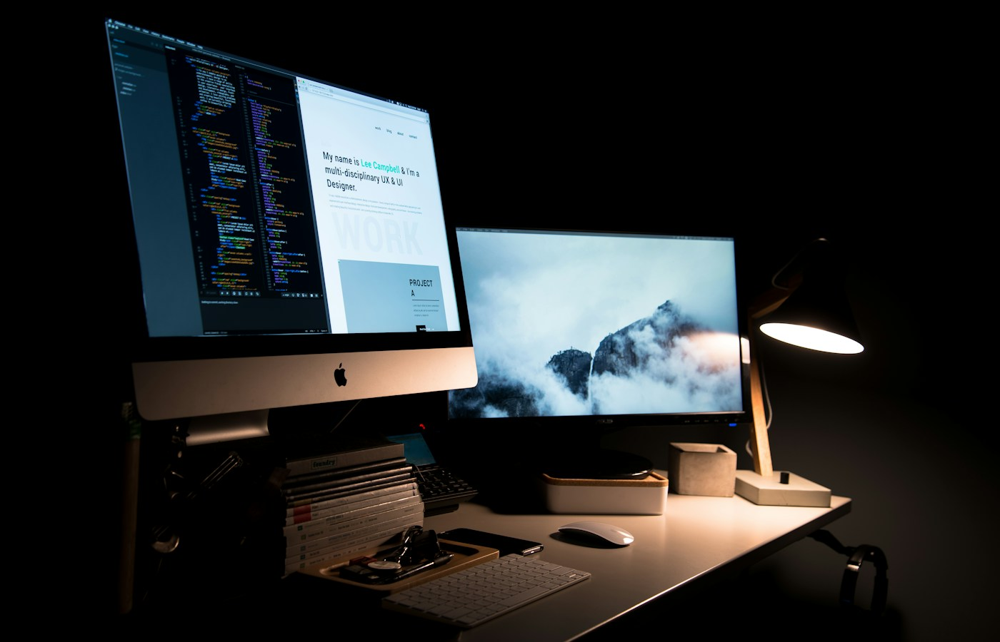
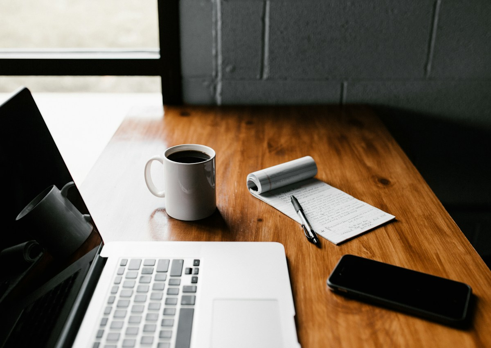
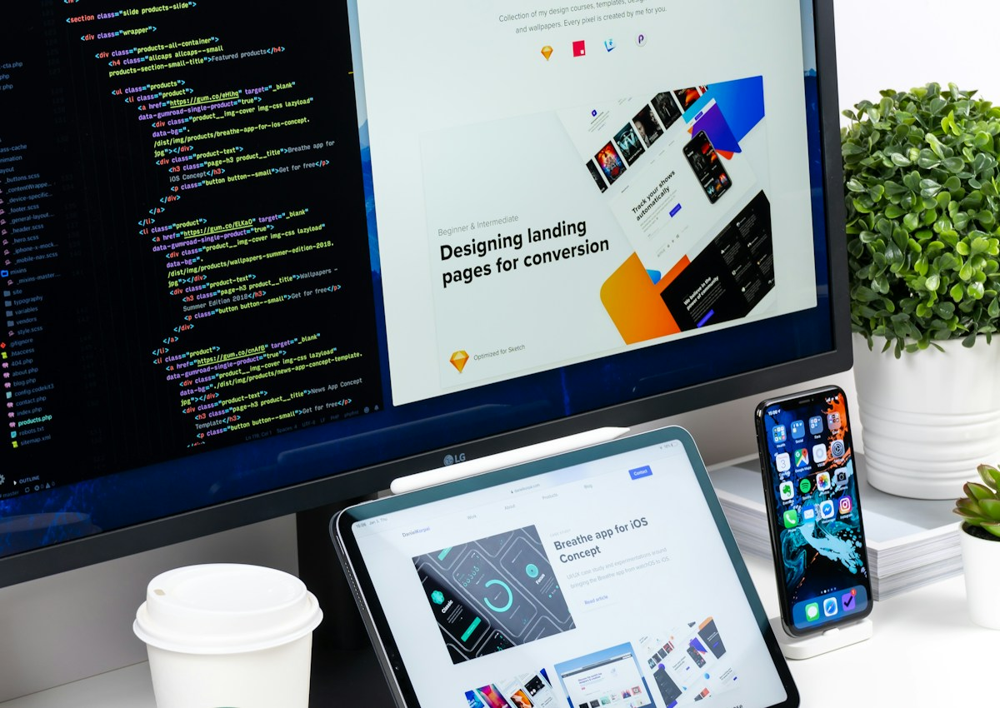
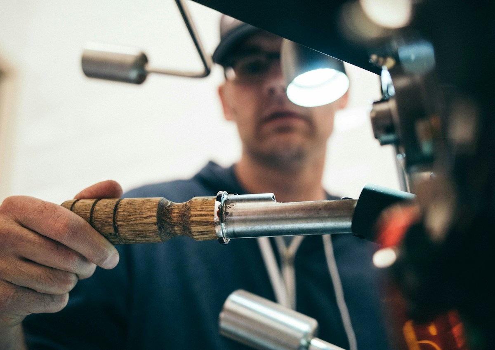

Web-editorial
Редакционная digital-страница для бренда: крупная типографика, спокойный ритм, визуальная история и premium-подача без перегруза.

Страница как визуальный журнал
Вместо стандартной структуры “заголовок — преимущества — форма” страница строится как редакционный материал. Пользователь постепенно погружается в бренд через визуалы, короткие тексты, детали и атмосферу.

Пространство и свет формируют ощущение бренда ещё до того, как пользователь прочитает текст.
Editorial-подача держится на паузах, отступах, крупной типографике и точных визуальных акцентах.
Меньше блоков, больше смысла
Editorial-страница не обязана быть длинной. Важно, чтобы каждый экран работал на общее ощущение бренда: кто мы, зачем существуем, как выглядим, в чём ценность и почему нам можно доверять.
Типографика становится частью образа
Крупные заголовки, короткие абзацы и спокойная иерархия помогают странице выглядеть как premium-публикация, а не как обычный рекламный лендинг.

Визуалы подбираются не только по смыслу, но и по ритму: они должны поддерживать страницу, а не спорить с ней.

Архитектурные и интерьерные кадры помогают передать ощущение стабильности, масштаба и чистоты.
Главное — ощущение после страницы
Пользователь может не запомнить каждый блок, но должен запомнить ощущение: бренд аккуратный, уверенный, современный и достаточно сильный, чтобы ему можно было доверить задачу.
Digital-страница с editorial-характером
Итог — страница, которая выглядит спокойнее, дороже и глубже, чем типовой лендинг, но при этом остаётся понятной и коммерческой.
Что входит в страницу
Editorial-структура, hero-блок, визуальная история, текстовые акценты, галерея, CTA и базовая система для развития страницы.